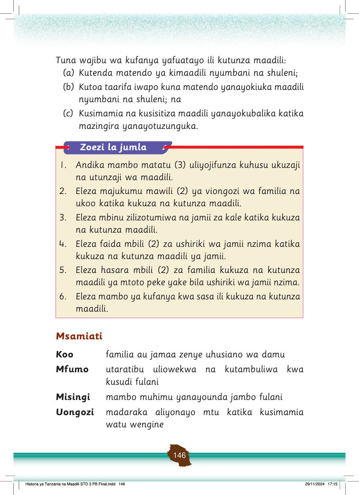

Tuna wajibu wa kufanya yafuatayo ili kutunza maadili:
(a)
Kutenda matendo ya kimaadili nyumbani na shuleni;
(b)
Kutoa taarifa iwapo kuna matendo yanayokiuka maadili nyumbani na shuleni; na
(c)
Kusimamia na kusisitiza maadili yanayokubalika katika mazingira yanayotuzunguka.
Msamiati
Koo
familia au jamaa zenye uhusiano wa damu
Mfumo
utaratibu uliowekwa na kutambuliwa kwa kusudi fulani
Misingi
mambo muhimu yanayounda jambo fulani
Uongozi
madaraka aliyonayo mtu katika kusimamia watu wengine
Historia ya Tanzania na Maadili STD 3 PB Final.indd 146
29/11/2024 17:15
Zoezi la jumla
1.
Andika mambo matatu (3) uliyojifunza kuhusu ukuzaji na utunzaji wa maadili.
2.
Eleza majukumu mawili (2) ya viongozi wa familia na ukoo katika kukuza na kutunza maadili.
3.
Eleza mbinu zilizotumiwa na jamii za kale katika kukuza na kutunza maadili.
4.
Eleza faida mbili (2) za ushiriki wa jamii nzima katika kukuza na kutunza maadili ya jamii.
5.
Eleza hasara mbili (2) za familia kukuza na kutunza maadili ya mtoto peke yake bila ushiriki wa jamii nzima.
6.
Eleza mambo ya kufanya kwa sasa ili kukuza na kutunza maadili.